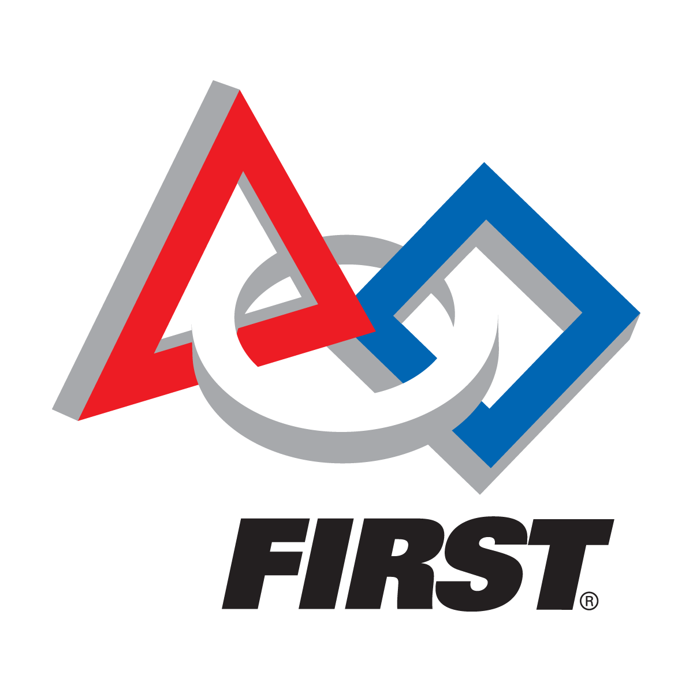

About FIRST
FIRST® (For Inspiration and Recognition of Science and Technology) was founded by Dean Kamen in 1989 to motivate young people’s interests and participation in STEM (Science, Technology, Engineering, & Mathematics).
FIRST® incorporates a Progression of Programs that is designed to encourage students to participate in STEM throughout their school years. The different programs are as follows: Jr.FLL® (Junior FIRST® LEGO® League), FLL (FIRST® LEGO® League), FTC (FIRST® Tech Challenge), and FRC (FIRST® Robotics Competition). Students can participate in these programs from the ages of 6-18, and develop an affinity to STEM while helping them gain self-confidence and develop skills to help them in the future.
About FRC

FRC (FIRST® Robotics Competition) is a competition designed to challenge high school students (grades 9-12) to achieve the highest possible level of their intellectual capacity through the use of science and technology. Every January, FRC holds a Kickoff in which it reveals the game for the year. At this point, build season starts, and teams of over 25 students have six weeks to design and build a fully functional robot that does what is specified by the game topic. Students are encouraged to work together with their mentors during this time period to further their knowledge about STEM.